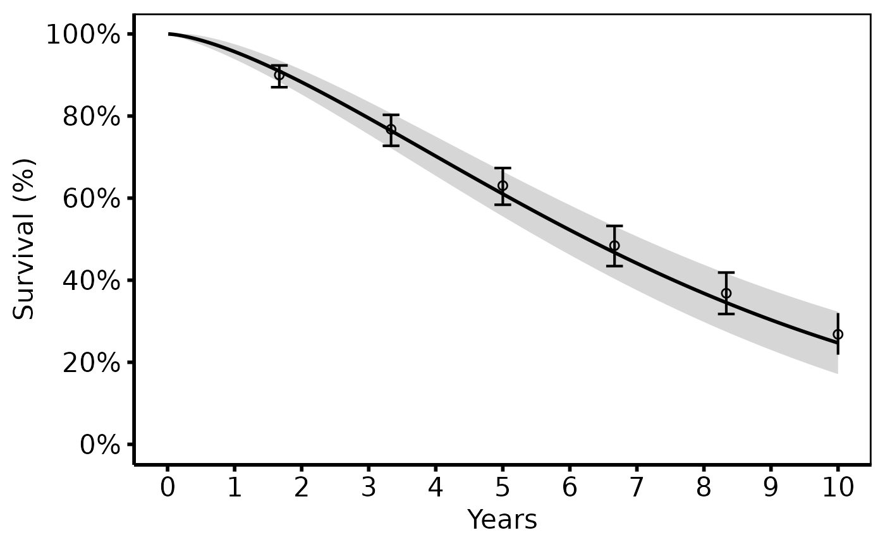
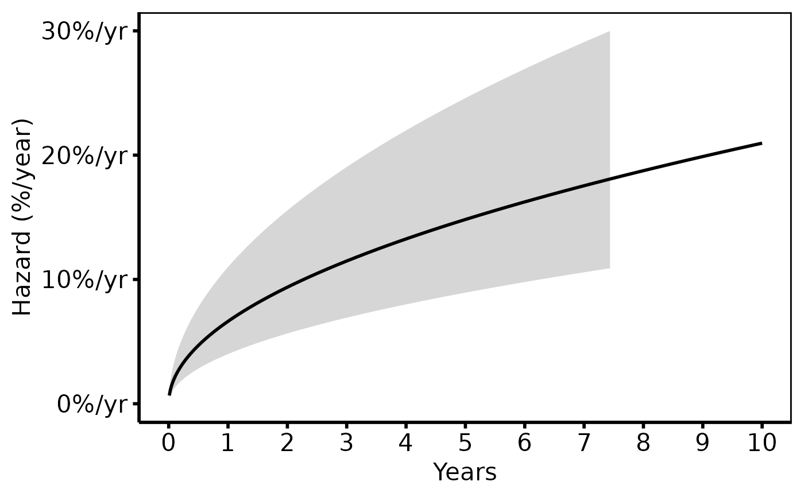
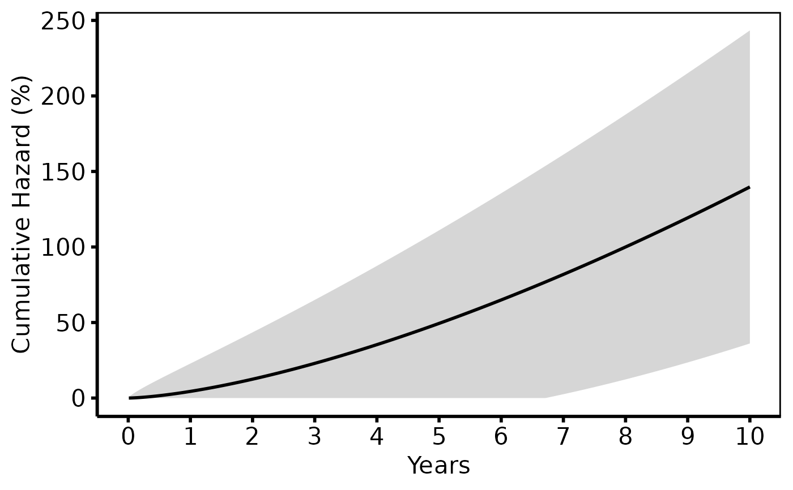
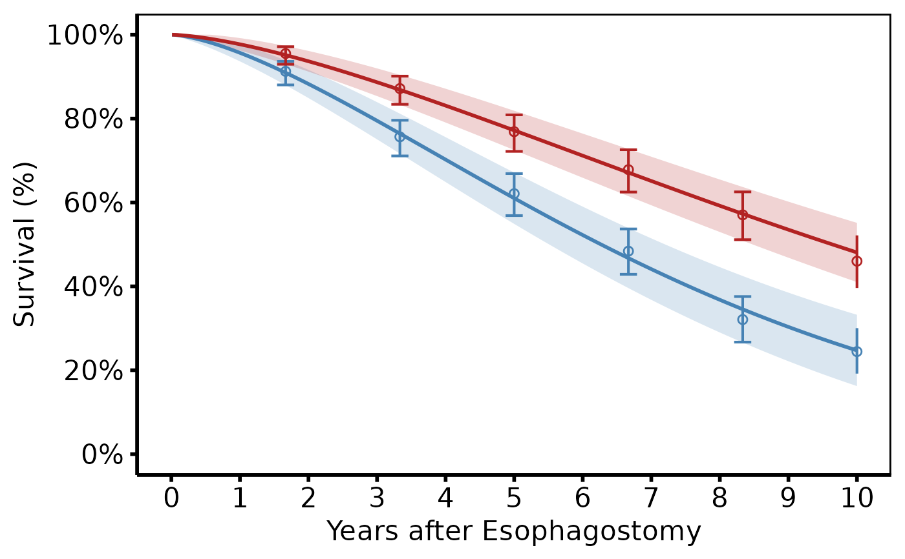
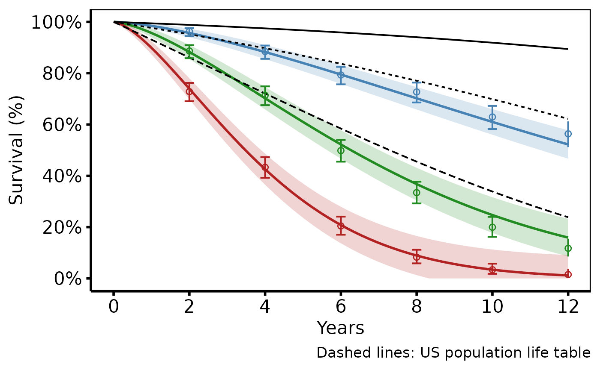
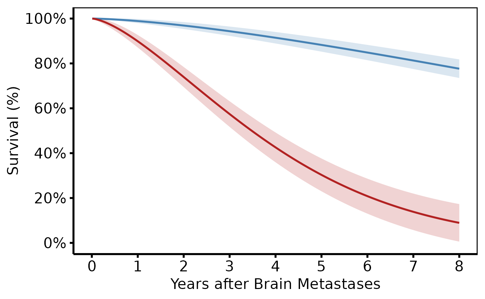
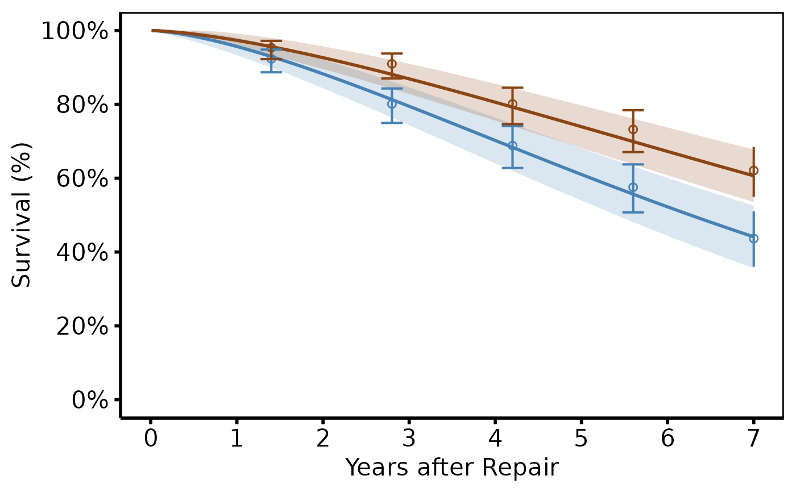
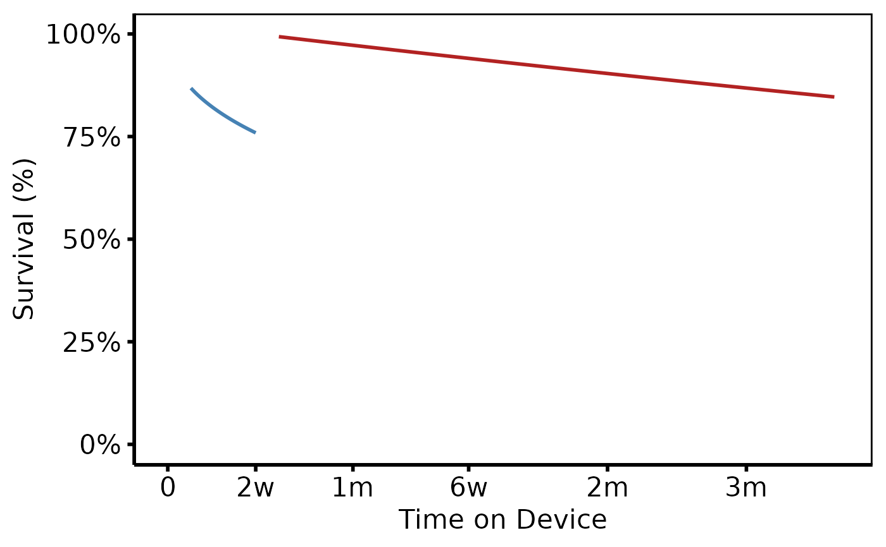

Superseded.
hazard_plot() has been superseded by the S3 constructor hvti_hazard()
plus plot.hvti_hazard().
Plots a pre-computed parametric survival, hazard, or cumulative-hazard curve
from a Weibull (or other parametric) model, optionally overlaid with
Kaplan-Meier empirical estimates and a population life-table reference.
Covers the complete family of tp.hp.dead.* SAS templates.
| SAS template | R usage |
| Basic survival (tp.hp.dead.sas) | hazard_plot(dat, estimate_col="survival") |
| Basic hazard (tp.hp.dead.sas) | hazard_plot(dat, estimate_col="hazard") |
| Cumulative hazard (tp.hp.event.weighted.sas) | hazard_plot(dat, estimate_col="cumhaz") |
| Stratified by group (tp.hp.dead.tkdn.stratified.sas) | + group_col="group" |
| KM empirical overlay | + empirical=emp_data |
| Life table overlay (tp.hp.dead.uslife.stratifed.sas) | + reference=lt_data |
| Age as x-axis (tp.hp.dead.age_on_horizontal_axis.sas) | x_col="age" |
SAS column mapping:
x_col←YEARS/iv_deadestimate_col←SSURVIV(survival),hazard(%/yr), orcumhazlower_col←SCLLSURV/cll_p95upper_col←SCLUSURV/clu_p95group_col← treatment/group indicator variableempirical← theplout/acpdmsKM output datasetreference← thesmatchedlife-table dataset
Returns a bare ggplot object; compose with scale_colour_*,
scale_y_continuous(), labs(), hvti_theme().
Usage
hazard_plot(
curve_data,
x_col = "time",
estimate_col = "survival",
lower_col = NULL,
upper_col = NULL,
group_col = NULL,
empirical = NULL,
emp_x_col = x_col,
emp_estimate_col = "estimate",
emp_lower_col = NULL,
emp_upper_col = NULL,
emp_group_col = group_col,
reference = NULL,
ref_x_col = x_col,
ref_estimate_col = estimate_col,
ref_group_col = NULL,
ci_alpha = 0.2,
line_width = 1,
point_size = 2,
point_shape = 1L,
errorbar_width = 0.25
)Arguments
- curve_data
Data frame of parametric predictions (fine grid). Typical source: SAS
predictdataset exported to CSV, orsample_hazard_data().- x_col
Name of the time (or age) column. Corresponds to
YEARS/iv_deadin SAS. Default"time".- estimate_col
Name of the predicted-value column. Use
"survival"for a survival plot,"hazard"for a hazard-rate plot, or"cumhaz"for a cumulative-hazard plot. Corresponds toSSURVIV,hazard, orcumhazin the SAS output. Default"survival".- lower_col
Name of the lower CI column in
curve_data, orNULLfor no ribbon. Corresponds toSCLLSURV/cll_p95. DefaultNULL.- upper_col
Name of the upper CI column in
curve_data, orNULL. Corresponds toSCLUSURV/clu_p95. DefaultNULL.- group_col
Name of the stratification column in
curve_data, orNULLfor a single curve. DefaultNULL.- empirical
Optional data frame of Kaplan-Meier empirical estimates (discrete time points). Corresponds to the SAS
plout/acpdmsdataset. Seesample_hazard_empirical(). DefaultNULL.- emp_x_col
Column name for x in
empirical. Default: same asx_col.- emp_estimate_col
Column name for y in
empirical. Default: same asestimate_col.- emp_lower_col
Column name for error-bar lower bound in
empirical, orNULLfor no error bars. DefaultNULL.- emp_upper_col
Column name for error-bar upper bound in
empirical, orNULL. DefaultNULL.- emp_group_col
Column name for grouping in
empirical. Default: same asgroup_col.- reference
Optional data frame of population life-table survival curves. Corresponds to the SAS
smatched/hmatcheddatasets. Seesample_life_table(). Rendered as dashed lines. DefaultNULL.- ref_x_col
Column name for x in
reference. Default: same asx_col.- ref_estimate_col
Column name for y in
reference. Default: same asestimate_col.- ref_group_col
Column name used to vary the linetype of the reference curves (e.g. age group). Default
NULL.- ci_alpha
Transparency of the parametric CI ribbon (
[0, 1]). Default0.20.- line_width
Width of the parametric curve line. SAS
width=3corresponds roughly to1.2. Default1.0.- point_size
Size of empirical overlay points. Default
2.0.- point_shape
Shape code for empirical points.
1= open circle (SASsymbol=circle);0= open square (SASsymbol=square). Default1.- errorbar_width
Width of the error bars on empirical points. Default
0.25.
Value
A ggplot2::ggplot() object.
References
SAS templates: tp.hp.dead.sas,
tp.hp.dead.tkdn.stratified.sas,
tp.hp.dead.age_with_population_life_table.sas,
tp.hp.dead.uslife.stratifed.sas,
tp.hp.dead.matching_weight.sas,
tp.hp.dead.limited_FET.mtwt.sas,
tp.hp.event.weighted.sas,
tp.hp.repeated.event.weighted.sas,
tp.hp.repeated_events.sas,
tp.hp.mcs.mod.dead.devseq_nlvlv12.scallop.sas.
Examples
library(ggplot2)
dat <- sample_hazard_data(n = 500, time_max = 10)
emp <- sample_hazard_empirical(n = 500, time_max = 10, n_bins = 6)
# --- (1) Basic survival curve + KM overlay -------------------------------
# Matches tp.hp.dead.sas (survival panel).
# SAS: SSURVIV on y-axis, SCLLSURV/SCLUSURV for CI, plout circles + bars.
hazard_plot(
dat,
estimate_col = "survival",
lower_col = "surv_lower",
upper_col = "surv_upper",
empirical = emp,
emp_lower_col = "lower",
emp_upper_col = "upper"
) +
scale_colour_manual(values = c("steelblue"), guide = "none") +
scale_fill_manual(values = c("steelblue"), guide = "none") +
scale_x_continuous(limits = c(0, 10), breaks = 0:10) +
scale_y_continuous(limits = c(0, 100), breaks = seq(0, 100, 20),
labels = function(x) paste0(x, "%")) +
labs(x = "Years", y = "Survival (%)") +
hvti_theme("manuscript")

# --- (2) Hazard rate curve + KM overlay ----------------------------------
# Matches tp.hp.dead.sas (hazard panel).
# SAS: hazard on y-axis (%/year). KM empirical hazard not shown here
# (the empirical overlay in SAS is the survival-based dot plot; for hazard,
# only the parametric curve is typically shown).
hazard_plot(
dat,
estimate_col = "hazard",
lower_col = "haz_lower",
upper_col = "haz_upper"
) +
scale_colour_manual(values = c("firebrick"), guide = "none") +
scale_fill_manual(values = c("firebrick"), guide = "none") +
scale_x_continuous(limits = c(0, 10), breaks = 0:10) +
scale_y_continuous(limits = c(0, 30),
labels = function(x) paste0(x, "%/yr")) +
labs(x = "Years", y = "Hazard (%/year)") +
hvti_theme("manuscript")
#> Warning: Removed 128 rows containing missing values or values outside the scale range
#> (`geom_ribbon()`).

# --- (3) Cumulative hazard (tp.hp.event.weighted.sas) --------------------
# For readmission / repeated-event analyses: cumhaz = -log(S)*100.
# SAS: Nelson-Aalen cumulative hazard. R: use cumhaz column from predict.
hazard_plot(
dat,
estimate_col = "cumhaz",
lower_col = "cumhaz_lower",
upper_col = "cumhaz_upper"
) +
scale_colour_manual(values = c("darkorange"), guide = "none") +
scale_fill_manual(values = c("darkorange"), guide = "none") +
scale_x_continuous(limits = c(0, 10), breaks = 0:10) +
labs(x = "Years", y = "Cumulative Hazard (%)") +
hvti_theme("manuscript")

# --- (4) Stratified survival (tp.hp.dead.tkdn.stratified.sas) ------------
# Two groups (e.g. Takedown vs No Takedown) with different colours and
# linetypes. KM empirical overlay uses matching colours.
dat2 <- sample_hazard_data(
n = 400, time_max = 10,
groups = c("No Takedown" = 1.0, "Takedown" = 0.65)
)
emp2 <- sample_hazard_empirical(
n = 400, time_max = 10, n_bins = 6,
groups = c("No Takedown" = 1.0, "Takedown" = 0.65)
)
hazard_plot(
dat2,
estimate_col = "survival",
lower_col = "surv_lower",
upper_col = "surv_upper",
group_col = "group",
empirical = emp2,
emp_lower_col = "lower",
emp_upper_col = "upper"
) +
scale_colour_manual(
values = c("No Takedown" = "steelblue", "Takedown" = "firebrick"),
name = NULL
) +
scale_fill_manual(
values = c("No Takedown" = "steelblue", "Takedown" = "firebrick"),
guide = "none"
) +
scale_x_continuous(limits = c(0, 10), breaks = 0:10) +
scale_y_continuous(limits = c(0, 100), breaks = seq(0, 100, 20),
labels = function(x) paste0(x, "%")) +
labs(x = "Years after Esophagostomy", y = "Survival (%)") +
hvti_theme("manuscript")

# --- (5) Life table overlay (tp.hp.dead.age_with_population_life_table) ---
# Age-stratified study curves + US population life table reference (dashed).
# SAS: smatched as dashed overlay; different symbols per age group.
dat3 <- sample_hazard_data(
n = 600, time_max = 12,
groups = c("<65" = 0.5, "65-80" = 1.0, "\u226580" = 1.8)
)
emp3 <- sample_hazard_empirical(
n = 600, time_max = 12, n_bins = 6,
groups = c("<65" = 0.5, "65-80" = 1.0, "\u226580" = 1.8)
)
lt <- sample_life_table(time_max = 12)
hazard_plot(
dat3,
estimate_col = "survival",
lower_col = "surv_lower",
upper_col = "surv_upper",
group_col = "group",
empirical = emp3,
emp_lower_col = "lower",
emp_upper_col = "upper",
reference = lt,
ref_estimate_col = "survival",
ref_group_col = "group"
) +
scale_colour_manual(
values = c("<65" = "steelblue", "65-80" = "forestgreen",
"\u226580" = "firebrick"),
name = "Age Group"
) +
scale_fill_manual(
values = c("<65" = "steelblue", "65-80" = "forestgreen",
"\u226580" = "firebrick"),
guide = "none"
) +
scale_x_continuous(limits = c(0, 12), breaks = seq(0, 12, 2)) +
scale_y_continuous(limits = c(0, 100), breaks = seq(0, 100, 20),
labels = function(x) paste0(x, "%")) +
labs(x = "Years", y = "Survival (%)",
caption = "Dashed lines: US population life table") +
hvti_theme("manuscript")

# --- (6) Multivariable risk profiles (tp.hp.dead.ideal_multivariable) -----
# Patient profiles with distinct covariate combinations (good vs poor risk).
dat_risk <- sample_hazard_data(
n = 500, time_max = 8,
groups = c("Ideal (young, stage IIIA)" = 0.4,
"Poor (elderly, stage IIIB, palliation)" = 1.8)
)
hazard_plot(
dat_risk,
estimate_col = "survival",
lower_col = "surv_lower",
upper_col = "surv_upper",
group_col = "group"
) +
scale_colour_manual(
values = c("Ideal (young, stage IIIA)" = "steelblue",
"Poor (elderly, stage IIIB, palliation)" = "firebrick"),
name = "Patient profile"
) +
scale_fill_manual(
values = c("Ideal (young, stage IIIA)" = "steelblue",
"Poor (elderly, stage IIIB, palliation)" = "firebrick"),
guide = "none"
) +
scale_x_continuous(limits = c(0, 8), breaks = 0:8) +
scale_y_continuous(limits = c(0, 100), breaks = seq(0, 100, 20),
labels = function(x) paste0(x, "%")) +
labs(x = "Years after Brain Metastases",
y = "Survival (%)") +
hvti_theme("manuscript")

# --- (7) Propensity-weighted / matched groups -----------------------------
# tp.hp.dead.matching_weight.sas / tp.hp.dead.limited_FET.mtwt.sas.
# Propensity weighting is applied upstream (before plotting); the plot call
# is identical to the basic stratified survival plot above.
dat_match <- sample_hazard_data(
n = 300, time_max = 7,
groups = c("Limited FET" = 1.0, "Extended FET" = 0.72)
)
emp_match <- sample_hazard_empirical(
n = 300, time_max = 7, n_bins = 5,
groups = c("Limited FET" = 1.0, "Extended FET" = 0.72)
)
hazard_plot(
dat_match,
estimate_col = "survival",
lower_col = "surv_lower",
upper_col = "surv_upper",
group_col = "group",
empirical = emp_match,
emp_lower_col = "lower",
emp_upper_col = "upper"
) +
scale_colour_manual(
values = c("Limited FET" = "steelblue", "Extended FET" = "#8B4513"),
name = NULL
) +
scale_fill_manual(
values = c("Limited FET" = "steelblue", "Extended FET" = "#8B4513"),
guide = "none"
) +
scale_x_continuous(limits = c(0, 7), breaks = 0:7) +
scale_y_continuous(limits = c(0, 100), breaks = seq(0, 100, 20),
labels = function(x) paste0(x, "%")) +
labs(x = "Years after Repair", y = "Survival (%)") +
hvti_theme("manuscript")

# --- (8) Device sequencing (tp.hp.mcs.mod.dead.devseq) -------------------
# Survival conditioned on surviving the non-LVAD phase, then the LVAD phase.
# In R: generate two separate prediction segments and rbind them.
dat_dev1 <- sample_hazard_data(n = 200, time_max = 0.038,
shape = 0.5, scale = 0.5)
dat_dev1$device <- "Non-LVAD (first 2 weeks)"
dat_dev2 <- sample_hazard_data(n = 200, time_max = 0.25,
shape = 1.0, scale = 1.5)
dat_dev2$time <- dat_dev2$time + 0.038
dat_dev2$device <- "LVAD"
dat_dev <- rbind(dat_dev1, dat_dev2)
hazard_plot(
dat_dev,
estimate_col = "survival",
group_col = "device"
) +
scale_colour_manual(
values = c("Non-LVAD (first 2 weeks)" = "steelblue", "LVAD" = "firebrick"),
name = NULL
) +
scale_x_continuous(limits = c(0, 0.29),
breaks = c(0, 0.038, 0.08, 0.13, 0.19, 0.25),
labels = c("0", "2w", "1m", "6w", "2m", "3m")) +
scale_y_continuous(limits = c(0, 100),
labels = function(x) paste0(x, "%")) +
labs(x = "Time on Device", y = "Survival (%)") +
hvti_theme("manuscript")

# --- (9) Save (dontrun) --------------------------------------------------
if (FALSE) { # \dontrun{
p <- hazard_plot(dat, estimate_col = "survival",
lower_col = "surv_lower", upper_col = "surv_upper",
empirical = emp,
emp_lower_col = "lower", emp_upper_col = "upper") +
scale_colour_manual(values = c("steelblue"), guide = "none") +
scale_fill_manual(values = c("steelblue"), guide = "none") +
labs(x = "Years", y = "Survival (%)") +
hvti_theme("manuscript")
ggplot2::ggsave("survival.pdf", p, width = 11.5, height = 8)
} # }
# --- Global theme + RColorBrewer (set once per session) ------------------
if (FALSE) { # \dontrun{
old <- ggplot2::theme_set(hvti_theme_manuscript())
hazard_plot(
dat2,
estimate_col = "survival",
lower_col = "surv_lower",
upper_col = "surv_upper",
group_col = "group",
empirical = emp2,
emp_lower_col = "lower",
emp_upper_col = "upper"
) +
ggplot2::scale_colour_brewer(palette = "Set1", name = NULL) +
ggplot2::scale_fill_brewer(palette = "Set1", guide = "none") +
ggplot2::scale_x_continuous(limits = c(0, 10), breaks = 0:10) +
ggplot2::scale_y_continuous(limits = c(0, 100), breaks = seq(0, 100, 20),
labels = function(x) paste0(x, "%")) +
ggplot2::labs(x = "Years", y = "Survival (%)")
ggplot2::theme_set(old)
} # }
# See vignette("plot-decorators", package = "hvtiPlotR") for theming,
# colour scales, annotation labels, and saving plots.